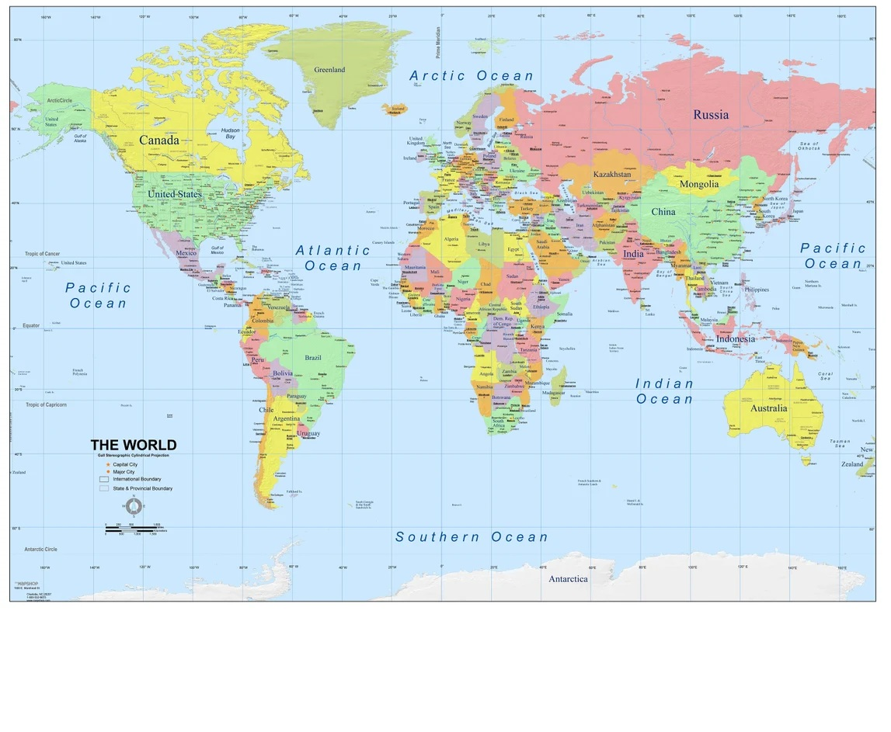

Guida interattiva al calcolo dell'azimut, delle scale e del tempo
L'orientamento relativo si basa sul piano dell'orizzonte in cui si trova l'osservatore e sui punti cardinali:
Come individuare matematicamente un obiettivo?
Per posizionare un punto nello spazio serve l'azimut, ma anche la distanza. La scala della carta (es. 1:1.000) indica di quante volte la realtà è stata rimpicciolita. Se misuri 2,8 cm sulla carta, devi moltiplicarli per la scala.
Fissato a Greenwich. È il punto di riferimento (UTC 0) per calcolare tutti gli orari globali.
Spostandoti a Est, andiamo incontro al sole. A ogni fuso devi aggiungere un'ora all'orologio.
Spostandoti a Ovest, il sole sorge dopo. A ogni fuso devi sottrarre un'ora all'orologio.
